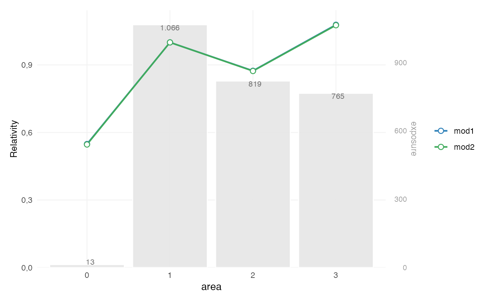
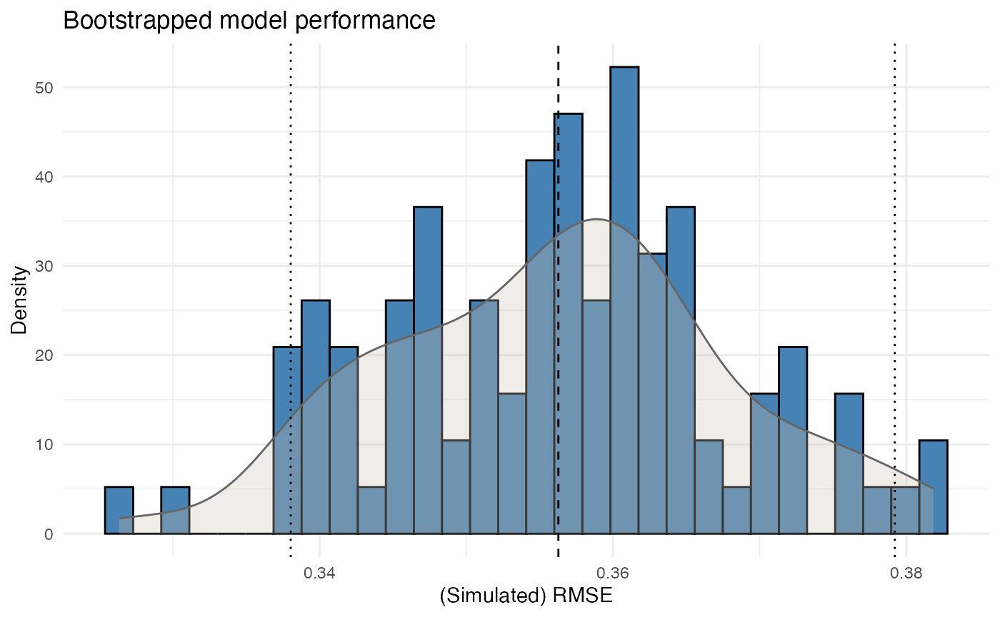
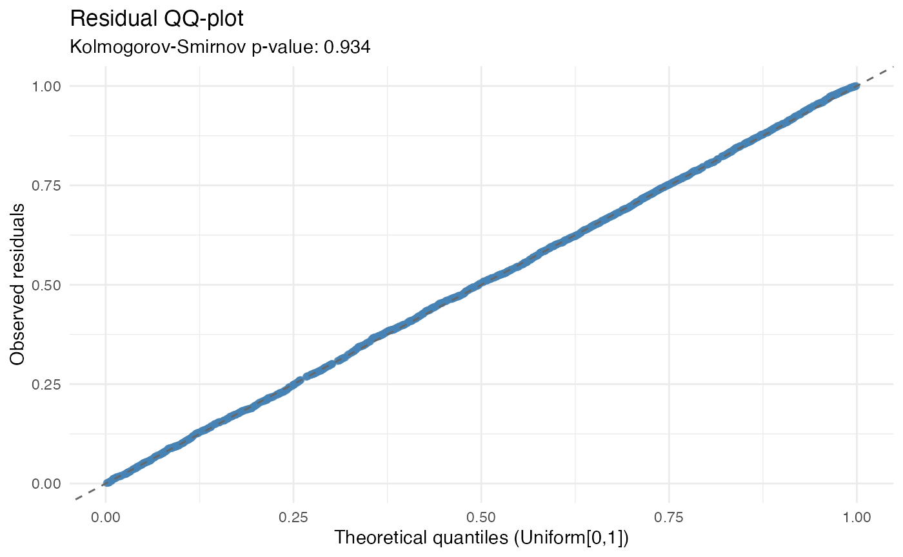

Introduction
Model validation is part of the standard pricing workflow.
After model estimation and coefficient interpretation, it is necessary to assess whether the model performs adequately and behaves in a stable and interpretable way.
In practice, model validation typically considers several dimensions:
- comparative model performance
- coefficient structure
- predictive stability
- distributional diagnostics
- portfolio-level behaviour
insurancerating provides tools for each of these
steps.
The purpose of validation is not only to assess statistical fit, but also to determine whether a model is suitable for use in a pricing context.
Example setup
The examples below use a simple frequency modelling setup based on
MTPL2.
library(insurancerating)
library(dplyr)
#>
#> Attaching package: 'dplyr'
#> The following objects are masked from 'package:stats':
#>
#> filter, lag
#> The following objects are masked from 'package:base':
#>
#> intersect, setdiff, setequal, union
df <- MTPL2 |>
mutate(across(c(area), as.factor)) |>
mutate(across(c(area), ~ biggest_reference(., exposure)))
mod1 <- glm(
nclaims ~ area,
offset = log(exposure),
family = poisson(),
data = df
)
mod2 <- glm(
nclaims ~ area + premium,
offset = log(exposure),
family = poisson(),
data = df
)Step 1 — Comparative model performance
A first validation step is to compare alternative model specifications.
model_performance(mod1, mod2)
#> # Comparison of Model Performance Indices
#>
#> Model | AIC | BIC | RMSE
#> ------+----------+----------+------
#> mod1 | 2287.25 | 2311.275 | 0.356
#> mod2 | 2289.054 | 2319.086 | 0.356This provides standard summary measures of model fit, such as RMSE.
The purpose of this step is to assess whether the addition or removal of model terms leads to a materially different fit.
In practice, this comparison is often used to support modelling choices before moving to tariff interpretation.
Step 2 — Coefficient inspection
Model validation is not limited to summary fit statistics. The coefficient structure also needs to be reviewed.
rating_table(mod1, mod2, model_data = df, exposure = "exposure") |>
autoplot()
This is used to assess:
- the relative size of fitted effects
- the ordering of factor levels
- the exposure behind each level
- whether differences are plausible and stable
In pricing practice, this is a standard part of validation, because a model with slightly better fit may still be less suitable if its coefficient structure is difficult to interpret or unstable in low-exposure segments.
Step 3 — Predictive stability
Single performance measures provide only a point estimate. In many pricing contexts, it is also relevant to assess how stable that performance is under small variations in the data.
bootstrap_performance(mod1, df, n = 100, show_progress = FALSE) |>
autoplot()
This evaluates predictive stability by repeatedly refitting the model on bootstrap samples and storing the resulting RMSE values.
The output is used to assess:
- the variability of model performance
- whether the fitted model behaves consistently
- whether the model is highly sensitive to changes in the underlying sample
This is particularly relevant when portfolios contain sparse segments or large claim volatility.
Step 4 — Dispersion checks
For Poisson models, it is standard practice to check whether the variance assumption is broadly appropriate.
check_overdispersion(mod1)
#> Dispersion ratio = 1.220
#> Pearson's Chi-squared = 3655.711
#> p-value = < 0.001
#> Overdispersion detected.A dispersion ratio above 1 indicates that the observed variance exceeds the variance implied by the Poisson model.
This does not automatically invalidate the model, but it does provide an important diagnostic signal. In pricing practice, overdispersion may indicate:
- omitted heterogeneity
- model misspecification
- clustering in the data
- or unmodelled portfolio structure
Step 5 — Residual diagnostics
Residual diagnostics provide an additional view of model adequacy.
check_residuals(mod1, n_simulations = 600) |>
autoplot()
#> ✅ Residuals consistent with expected distribution (p = 0.934)
This step is used to assess whether the residual behaviour is broadly consistent with the fitted model assumptions.
In GLM settings, simulation-based residual diagnostics are often more useful than classical residual plots, because they allow the fitted model to be evaluated relative to its own implied distribution.
The purpose of this step is not to search for perfect residual behaviour, but to identify material deviations that may be relevant for pricing.
Step 6 — Portfolio-level structure
Validation is also performed at portfolio or model-point level.
grid <- rating_grid(mod1)
head(grid)
#> # A tibble: 6 × 7
#> customer_id area nclaims amount exposure premium count
#> <int> <fct> <int> <int> <dbl> <int> <int>
#> 1 54 3 0 0 0.452 84 1
#> 2 60 3 0 0 0.879 65 1
#> 3 108 3 0 0 1 76 1
#> 4 174 2 0 0 1 66 1
#> 5 220 2 1 33 1 58 1
#> 6 296 3 0 0 1 65 1rating_grid() aggregates the fitted model to observed
model-point combinations. This is useful when validation requires a more
structured view of:
- observed portfolio composition
- combinations of rating factors
- model-point level summaries
- compact portfolio input for further review
This step is particularly relevant when moving from model validation to tariff review or implementation support.
Validation in context
In practice, model validation is rarely based on a single statistic.
A standard validation workflow combines:
- comparative performance measures
- coefficient inspection
- predictive stability
- residual and dispersion diagnostics
- portfolio-level review
These steps serve different purposes:
- performance measures assess fit
- coefficient inspection assesses interpretability
- bootstrap analysis assesses stability
- diagnostics assess model adequacy
- portfolio review assesses practical usability
Taken together, they provide a structured basis for deciding whether a model is suitable for pricing use.
Summary
A standard validation workflow in insurancerating
is:
model_performance(...) # compare fitted models
rating_table(...) |> autoplot() # inspect coefficient structure
bootstrap_performance(...) # assess predictive stability
check_overdispersion(...) # assess dispersion
check_residuals(...) # inspect residual behaviour
rating_grid(...) # review model-point structureThe purpose of validation is not only to assess model fit, but to determine whether the fitted model is:
- statistically adequate
- stable under data variation
- interpretable in tariff terms
- suitable for practical pricing use